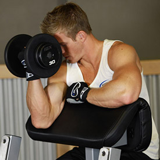
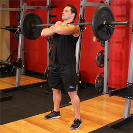
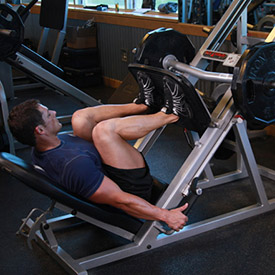
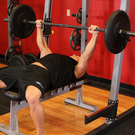
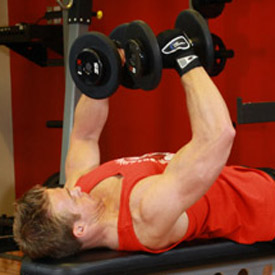
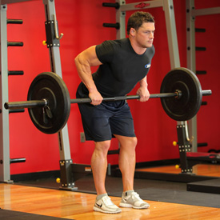
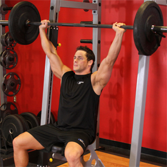
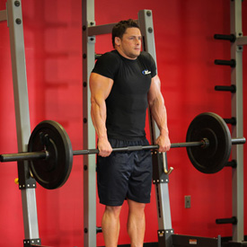
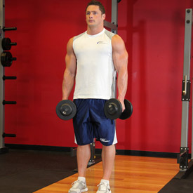

Hammer Curl
Hammer Curl Category: Biceps
- Stand up with your torso upright and a dumbbell in each hand being held at arms length. The elbows should be close to the torso.
- The palms of the hands should be facing your torso. This will be your starting position.
- While holding the upper arm stationary, curl the right weight forward while contracting the biceps as you breathe out. Continue the movement until your biceps is fully contracted and the dumbbells are at shoulder level. Hold the contracted position for a second as you squeeze the biceps. Tip: Only the forearms should move.
- Slowly begin to bring the dumbbells back to starting position as your breathe in.
- Repeat the movement with the left hand. This equals one repetition.
- Continue alternating in this manner for the recommended amount of repetitions.
Bar Curl
Category: Biceps

Category: Biceps
- Stand up with your torso upright while holding a barbell at a shoulder-width grip. The palm of your hands should be facing forward and the elbows should be close to the torso. This will be your starting position.
- While holding the upper arms stationary, curl the weights forward while contracting the biceps as you breathe out. Tip: Only the forearms should move.
- Continue the movement until your biceps are fully contracted and the bar is at shoulder level. Hold the contracted position for a second and squeeze the biceps hard.
- Slowly begin to bring the bar back to starting position as your breathe in.
- Repeat for the recommended amount of repetitions.
 Concentration Curls
Concentration Curls Category: Biceps
- Sit down on a flat bench with one dumbbell in front of you between your legs. Your legs should be spread with your knees bent and feet on the floor.
- Use your right arm to pick the dumbbell up. Place the back of your right upper arm on the top of your inner right thigh. Rotate the palm of your hand until it is facing forward away from your thigh. Tip: Your arm should be extended and the dumbbell should be above the floor. This will be your starting position.
- While holding the upper arm stationary, curl the weights forward while contracting the biceps as you breathe out. Only the forearms should move. Continue the movement until your biceps are fully contracted and the dumbbells are at shoulder level. Tip: At the top of the movement make sure that the little finger of your arm is higher than your thumb. This guarantees a good contraction. Hold the contracted position for a second as you squeeze the biceps.
- Slowly begin to bring the dumbbells back to starting position as your breathe in. Caution: Avoid swinging motions at any time.
- Repeat for the recommended amount of repetitions. Then repeat the movement with the left arm.
 Dumbel Biceps Curl
Dumbel Biceps Curl Category: Biceps
- Stand up straight with a dumbbell in each hand at arm's length. Keep your elbows close to your torso and rotate the palms of your hands until they are facing forward. This will be your starting position.
- Now, keeping the upper arms stationary, exhale and curl the weights while contracting your biceps. Continue to raise the weights until your biceps are fully contracted and the dumbbells are at shoulder level. Hold the contracted position for a brief pause as you squeeze your biceps.
- Then, inhale and slowly begin to lower the dumbbells back to the starting position.
- Repeat for the recommended amount of repetitions.
One Arm Dumbbell Preacher Curl
Category: Biceps
Category: Biceps

- Grab a dumbbell with the right arm and place the upper arm on top of the preacher bench or the incline bench. The dumbbell should be held at shoulder length. This will be your starting position.
- As you breathe in, slowly lower the dumbbell until your upper arm is extended and the biceps is fully stretched.
- As you exhale, use the biceps to curl the weight up until your biceps is fully contracted and the dumbbell is at shoulder height. Again, remember that to ensure full contraction you need to bring that small finger higher than the thumb.
- Squeeze the biceps hard for a second at the contracted position and repeat for the recommended amount of repetitions.
- Switch arms and repeat the movement.
Bench Press - Powerlifting
Category: Triceps
Category: Triceps
- Begin by lying on the bench, getting your head beyond the bar if possible. Tuck your feet underneath you and arch your back. Using the bar to help support your weight, lift your shoulder off the bench and retract them, squeezing the shoulder blades together. Use your feet to drive your traps into the bench. Maintain this tight body position throughout the movement.
- However wide your grip, it should cover the ring on the bar. Pull the bar out of the rack without protracting your shoulders. Focus on squeezing the bar and trying to pull it apart.
- Lower the bar to your lower chest or upper stomach. The bar, wrist, and elbow should stay in line at all times.
- Pause when the barbell touches your torso, and then drive the bar up with as much force as possible. The elbows should be tucked in until lockout.
Cable One Arm Tricep Extension
Category: Triceps
Category: Triceps
- With your right hand, grasp a single handle attached to the high-cable pulley using a supinated (underhand; palms facing up) grip. You should be standing directly in front of the weight stack.
- Now pull the handle down so that your upper arm and elbow are locked in to the side of your body. Your upper arm and forearm should form an acute angle (less than 90-degrees). You can keep the other arm by the waist and you can have one leg in front of you and the other one back for better balance. This will be your starting position.
- As you contract the triceps, move the single handle attachment down to your side until your arm is straight. Breathe out as you perform this movement. Tip: Only the forearms should move. Your upper arms should remain stationary at all times.
- Squeeze the triceps and hold for a second in this contracted position.
- Slowly return the handle to the starting position.
- Repeat for the recommended amount of repetitions and then perform the same movement with the other arm.
Decline EZ Bar Triceps Extension
Category: Triceps
Category: Triceps
- Secure your legs at the end of the decline bench and slowly lay down on the bench.
- Using a close grip (a grip that is slightly less than shoulder width), lift the EZ bar from the rack and hold it straight over you with your arms locked and elbows in. The arms should be perpendicular to the floor. This will be your starting position. Tip: In order to protect your rotator cuff, it is best if you have a spotter help you lift the barbell off the rack.
- As you breathe in and you keep the upper arms stationary, bring the bar down slowly by moving your forearms in a semicircular motion towards you until you feel the bar slightly touch your forehead. Breathe in as you perform this portion of the movement.
- Lift the bar back to the starting position by contracting the triceps and exhaling.
- Repeat until the recommended amount of repetitions is performed.
Dumbbell One-Arm Triceps Extension
Category: Triceps
Category: Triceps
- Grab a dumbbell and either sit on a military press bench or a utility bench that has a back support on it as you place the dumbbells upright on top of your thighs or stand up straight.
- Clean the dumbbell up to bring it to shoulder height and then extend the arm over your head so that the whole arm is perpendicular to the floor and next to your head. The dumbbell should be on top of you. The other hand can be kept fully extended to the side, by the waist, supporting the upper arm that has the dumbbell or grabbing a fixed surface.
- Rotate the wrist so that the palm of your hand is facing forward and the pinkie is facing the ceiling. This will be your starting position.
- Slowly lower the dumbbell behind your head as you hold the upper arm stationary. Inhale as you perform this movement and pause when your triceps are fully stretched.
- Return to the starting position by flexing your triceps as you breathe out. Tip: It is imperative that only the forearm moves. The upper arm should remain at all times stationary next to your head.
- Repeat for the recommended amount of repetitions and switch arms.
Lying Close-Grip Barbell Triceps Extension Behind The Head
Category: Triceps
Category: Triceps
- While holding a barbell or EZ Curl bar with a pronated grip (palms facing forward), lie on your back on a flat bench with your head close to the end of the bench. Tip: If you are holding a barbell grab it using a shoulder-width grip and if you are using an E-Z Bar grab it on the inner handles.
- Extend your arms in front of you and slowly bring the bar back in a semi circular motion (while keeping the arms extended) to a position over your head. At the end of this step your arms should be overhead and parallel to the floor. This will be your starting position. Tip: Keep your elbows in at all times.
- As you inhale, lower the bar by bending at the elbows and while keeping the upper arm stationary. Keep lowering the bar until your forearms are perpendicular to the floor.
- As you exhale bring the bar back up to the starting position by pushing the bar up in a semi-circular motion until the lower arms are also parallel to the floor. Contract the triceps hard at the top of the movement for a second. Tip: Again, only the forearms should move. The upper arms should remain stationary at all times.
- Repeat for the recommended amount of repetitions.
Push-Ups - Close Triceps Position
Category: Triceps
Category: Triceps
- Lie on the floor face down and place your hands closer than shoulder width for a close hand position. Make sure that you are holding your torso up at arms' length.
- Lower yourself until your chest almost touches the floor as you inhale.
- Using your triceps and some of your pectoral muscles, press your upper body back up to the starting position and squeeze your chest. Breathe out as you perform this step.
- After a second pause at the contracted position, repeat the movement for the prescribed amount of repetitions.
Barbell Full Squat
Category: Legs
Category: Legs
- This exercise is best performed inside a squat rack for safety purposes. To begin, first set the bar on a rack just above shoulder level. Once the correct height is chosen and the bar is loaded, step under the bar and place the back of your shoulders (slightly below the neck) across it.
- Hold on to the bar using both arms at each side and lift it off the rack by first pushing with your legs and at the same time straightening your torso.
- Step away from the rack and position your legs using a shoulder-width medium stance with the toes slightly pointed out. Keep your head up at all times and maintain a straight back. This will be your starting position.
- Begin to slowly lower the bar by bending the knees and sitting back with your hips as you maintain a straight posture with the head up. Continue down until your hamstrings are on your calves. Inhale as you perform this portion of the movement.
- Begin to raise the bar as you exhale by pushing the floor with the heel or middle of your foot as you straighten the legs and extend the hips to go back to the starting position.
- Repeat for the recommended amount of repetitions.
Dumbbell Lunges
Category: Legs
Category: Legs
- Stand with your torso upright holding two dumbbells in your hands by your sides. This will be your starting position.
- Step forward with your right leg around 2 feet or so from the foot being left stationary behind and lower your upper body down, while keeping the torso upright and maintaining balance. Inhale as you go down. Note: As in the other exercises, do not allow your knee to go forward beyond your toes as you come down, as this will put undue stress on the knee joint. Make sure that you keep your front shin perpendicular to the ground.
- Using mainly the heel of your foot, push up and go back to the starting position as you exhale.
- Repeat the movement for the recommended amount of repetitions and then perform with the left leg.

Front Barbell Squat
Category: Legs
Category: Legs
- This exercise is best performed inside a squat rack for safety purposes. To begin, first set the bar on a rack that best matches your height. Once the correct height is chosen and the bar is loaded, bring your arms up under the bar while keeping the elbows high and the upper arm slightly above parallel to the floor. Rest the bar on top of the deltoids and cross your arms while grasping the bar for total control.
- Lift the bar off the rack by first pushing with your legs and at the same time straightening your torso.
- Step away from the rack and position your legs using a shoulder width medium stance with the toes slightly pointed out. Keep your head up at all times as looking down will get you off balance and also maintain a straight back. This will be your starting position. (Note: For the purposes of this discussion we will use the medium stance described above which targets overall development; however you can choose any of the three stances described in the foot positioning section).
- Begin to slowly lower the bar by bending the knees as you maintain a straight posture with the head up. Continue down until the angle between the upper leg and the calves becomes slightly less than 90-degrees (which is the point in which the upper legs are below parallel to the floor). Inhale as you perform this portion of the movement. Tip: If you performed the exercise correctly, the front of the knees should make an imaginary straight line with the toes that is perpendicular to the front. If your knees are past that imaginary line (if they are past your toes) then you are placing undue stress on the knee and the exercise has been performed incorrectly.
- Begin to raise the bar as you exhale by pushing the floor mainly with the middle of your foot as you straighten the legs again and go back to the starting position.
- Repeat for the recommended amount of repetitions.
 Leg Extensions
Leg Extensions Category: Legs
- For this exercise you will need to use a leg extension machine. First choose your weight and sit on the machine with your legs under the pad (feet pointed forward) and the hands holding the side bars. This will be your starting position. Tip: You will need to adjust the pad so that it falls on top of your lower leg (just above your feet). Also, make sure that your legs form a 90-degree angle between the lower and upper leg. If the angle is less than 90-degrees then that means the knee is over the toes which in turn creates undue stress at the knee joint. If the machine is designed that way, either look for another machine or just make sure that when you start executing the exercise you stop going down once you hit the 90-degree angle.
- Using your quadriceps, extend your legs to the maximum as you exhale. Ensure that the rest of the body remains stationary on the seat. Pause a second on the contracted position.
- Slowly lower the weight back to the original position as you inhale, ensuring that you do not go past the 90-degree angle limit.
- Repeat for the recommended amount of times.
 Leg Press
Leg Press Category: Legs

- Using a leg press machine, sit down on the machine and place your legs on the platform directly in front of you at a medium (shoulder width) foot stance. (Note: For the purposes of this discussion we will use the medium stance described above which targets overall development; however you can choose any of the three stances described in the foot positioning section).
- Lower the safety bars holding the weighted platform in place and press the platform all the way up until your legs are fully extended in front of you. Tip: Make sure that you do not lock your knees. Your torso and the legs should make a perfect 90-degree angle. This will be your starting position.
- As you inhale, slowly lower the platform until your upper and lower legs make a 90-degree angle.
- Pushing mainly with the heels of your feet and using the quadriceps go back to the starting position as you exhale.
- Repeat for the recommended amount of repetitions and ensure to lock the safety pins properly once you are done. You do not want that platform falling on you fully loaded.
 Crunches
Crunches Category: Abominals
- Lie face up with your whole body straight on a flat bench while holding a weight plate on top of your forehead. Tip: You will need to position yourself so that your shoulders are slightly above the end of a flat bench in order for the traps, neck and head to be off the bench. This will be your starting position.
- While keeping the plate secure on your forehead slowly lower your head back in a semi-circular motion as you breathe in.
- Raise your head back up to the starting position in a semi-circular motion as you breathe out. Hold the contraction for a second.
- Repeat for the recommended amount of repetitions.
Cable Crunch
Category: Abominals

Category: Abominals
- Kneel below a high pulley that contains a rope attachment.
- Grasp cable rope attachment and lower the rope until your hands are placed next to your face.
- Flex your hips slightly and allow the weight to hyperextend the lower back. This will be your starting position.
- With the hips stationary, flex the waist as you contract the abs so that the elbows travel towards the middle of the thighs. Exhale as you perform this portion of the movement and hold the contraction for a second.
- Slowly return to the starting position as you inhale. Tip: Make sure that you keep constant tension on the abs throughout the movement. Also, do not choose a weight so heavy that the lower back handles the brunt of the work.
- Repeat for the recommended amount of repetitions.
Toe Touchers
Category: Abominals
Category: Abominals
- To begin, lie down on the floor or an exercise mat with your back pressed against the floor. Your arms should be lying across your sides with the palms facing down.
- Your legs should be touching each other. Slowly elevate your legs up in the air until they are almost perpendicular to the floor with a slight bend at the knees. Your feet should be parallel to the floor.
- Move your arms so that they are fully extended at a 45 degree angle from the floor. This is the starting position.
- While keeping your lower back pressed against the floor, slowly lift your torso and use your hands to try and touch your toes. Remember to exhale while perform this part of the exercise.
- Slowly begin to lower your torso and arms back down to the starting position while inhaling. Remember to keep your arms straight out pointing towards your toes.
- Repeat for the recommended amount of repetitions.

Barbell Bench Press
Category: Chest

Category: Chest
- Lie back on a flat bench. Using a medium width grip (a grip that creates a 90-degree angle in the middle of the movement between the forearms and the upper arms), lift the bar from the rack and hold it straight over you with your arms locked. This will be your starting position.
- From the starting position, breathe in and begin coming down slowly until the bar touches your middle chest.
- After a brief pause, push the bar back to the starting position as you breathe out. Focus on pushing the bar using your chest muscles. Lock your arms and squeeze your chest in the contracted position at the top of the motion, hold for a second and then start coming down slowly again. Tip: Ideally, lowering the weight should take about twice as long as raising it.
- Repeat the movement for the prescribed amount of repetitions.
- When you are done, place the bar back in the rack.
Barbell Guillotine Bench Press
Category: Chest
Category: Chest
- Using a medium width grip (a grip that creates a 90-degree angle in the middle of the movement between the forearms and the upper arms), lift the bar from the rack and hold it straight over your neck with your arms locked. This will be your starting position.
- As you breathe in, bring the bar down slowly until it is about 1 inch from your neck.
- After a second pause, bring the bar back to the starting position as you breathe out and push the bar using your chest muscles. Lock your arms and squeeze your chest in the contracted position, hold for a second and then start coming down slowly again. It should take at least twice as long to go down than to come up.
- Repeat the movement for the prescribed amount of repetitions.
- When you are done, place the bar back in the rack.
Decline Barbell Bench Press
Category: Chest
Category: Chest
- Secure your legs at the end of the decline bench and slowly lay down on the bench.
- Using a medium width grip (a grip that creates a 90-degree angle in the middle of the movement between the forearms and the upper arms), lift the bar from the rack and hold it straight over you with your arms locked. The arms should be perpendicular to the floor. This will be your starting position. Tip: In order to protect your rotator cuff, it is best if you have a spotter help you lift the barbell off the rack.
- As you breathe in, come down slowly until you feel the bar on your lower chest.
- After a second pause, bring the bar back to the starting position as you breathe out and push the bar using your chest muscles. Lock your arms and squeeze your chest in the contracted position, hold for a second and then start coming down slowly again. Tip: It should take at least twice as long to go down than to come up).
- Repeat the movement for the prescribed amount of repetitions.
 Decline Dumbbell Bench Press
Decline Dumbbell Bench PressCategory: Chest
- Secure your legs at the end of the decline bench and lie down with a dumbbell on each hand on top of your thighs. The palms of your hand will be facing each other.
- Once you are laying down, move the dumbbells in front of you at shoulder width.
- Once at shoulder width, rotate your wrists forward so that the palms of your hands are facing away from you. This will be your starting position.
- Bring down the weights slowly to your side as you breathe out. Keep full control of the dumbbells at all times. Tip: Throughout the motion, the forearms should always be perpendicular to the floor.
- As you breathe out, push the dumbbells up using your pectoral muscles. Lock your arms in the contracted position, squeeze your chest, hold for a second and then start coming down slowly. Tip: It should take at least twice as long to go down than to come up..
- Repeat the movement for the prescribed amount of repetitions of your training program.
Decline Dumbbell Flyess
Category: Chest

Category: Chest
- Secure your legs at the end of the decline bench and lie down with a dumbbell on each hand on top of your thighs. The palms of your hand will be facing each other.
- Once you are laying down, move the dumbbells in front of you at shoulder width. The palms of the hands should be facing each other and the arms should be perpendicular to the floor and fully extended. This will be your starting position.
- With a slight bend on your elbows in order to prevent stress at the biceps tendon, lower your arms out at both sides in a wide arc until you feel a stretch on your chest. Breathe in as you perform this portion of the movement. Tip: Keep in mind that throughout the movement, the arms should remain stationary; the movement should only occur at the shoulder joint.
- Return your arms back to the starting position as you squeeze your chest muscles and breathe out. Tip: Make sure to use the same arc of motion used to lower the weights.
- Hold for a second at the contracted position and repeat the movement for the prescribed amount of repetitions.
Dumbbell Bench Press
Category: Chest
Category: Chest
- Lie down on a flat bench with a dumbbell in each hand resting on top of your thighs. The palms of your hands will be facing each other.
- Then, using your thighs to help raise the dumbbells up, lift the dumbbells one at a time so that you can hold them in front of you at shoulder width.
- Once at shoulder width, rotate your wrists forward so that the palms of your hands are facing away from you. The dumbbells should be just to the sides of your chest, with your upper arm and forearm creating a 90 degree angle. Be sure to maintain full control of the dumbbells at all times. This will be your starting position.
- Then, as you breathe out, use your chest to push the dumbbells up. Lock your arms at the top of the lift and squeeze your chest, hold for a second and then begin coming down slowly. Tip: Ideally, lowering the weight should take about twice as long as raising it.
- Repeat the movement for the prescribed amount of repetitions of your training program.

Dumbbell Flyes
Category: Chest
Category: Chest
- Lie down on a flat bench with a dumbbell on each hand resting on top of your thighs. The palms of your hand will be facing each other.
- Then using your thighs to help raise the dumbbells, lift the dumbbells one at a time so you can hold them in front of you at shoulder width with the palms of your hands facing each other. Raise the dumbbells up like you're pressing them, but stop and hold just before you lock out. This will be your starting position.
- With a slight bend on your elbows in order to prevent stress at the biceps tendon, lower your arms out at both sides in a wide arc until you feel a stretch on your chest. Breathe in as you perform this portion of the movement. Tip: Keep in mind that throughout the movement, the arms should remain stationary; the movement should only occur at the shoulder joint.
- Return your arms back to the starting position as you squeeze your chest muscles and breathe out. Tip: Make sure to use the same arc of motion used to lower the weights.
- Hold for a second at the contracted position and repeat the movement for the prescribed amount of repetitions.
Hammer Grip Incline DB Bench Press
Category: Chest
Category: Chest
- Lie back on an incline bench with a dumbbell on each hand on top of your thighs. The palms of your hand will be facing each other.
- By using your thighs to help you get the dumbbells up, clean the dumbbells one arm at a time so that you can hold them at shoulder width.
- Once at shoulder width, keep the palms of your hands with a neutral grip (palms facing each other). Keep your elbows flared out with the upper arms in line with the shoulders (perpendicular to the torso) and the elbows bent creating a 90-degree angle between the upper arm and the forearm. This will be your starting position.
- Now bring down the weights slowly to your side as you breathe in. Keep full control of the dumbbells at all times.
- As you breathe out, push the dumbbells up using your pectoral muscles. Lock your arms in the contracted position, hold for a second and then start coming down slowly. Tip: It should take at least twice as long to go down than to come up.
- Repeat the movement for the prescribed amount of repetitions.
Incline Dumbbell Press
Category: Chest
Category: Chest
- Lie back on an incline bench with a dumbbell in each hand atop your thighs. The palms of your hands will be facing each other.
- Then, using your thighs to help push the dumbbells up, lift the dumbbells one at a time so that you can hold them at shoulder width.
- Once you have the dumbbells raised to shoulder width, rotate your wrists forward so that the palms of your hands are facing away from you. This will be your starting position.
- Be sure to keep full control of the dumbbells at all times. Then breathe out and push the dumbbells up with your chest.
- Lock your arms at the top, hold for a second, and then start slowly lowering the weight. Tip Ideally, lowering the weights should take about twice as long as raising them.
- Repeat the movement for the prescribed amount of repetitions.
Barbell Deadlift
Category: Back
Category: Back
- Stand in front of a loaded barbell.
- While keeping the back as straight as possible, bend your knees, bend forward and grasp the bar using a medium (shoulder width) overhand grip. This will be the starting position of the exercise. Tip: If it is difficult to hold on to the bar with this grip, alternate your grip or use wrist straps.
- While holding the bar, start the lift by pushing with your legs while simultaneously getting your torso to the upright position as you breathe out. In the upright position, stick your chest out and contract the back by bringing the shoulder blades back. Think of how the soldiers in the military look when they are in standing in attention.
- Go back to the starting position by bending at the knees while simultaneously leaning the torso forward at the waist while keeping the back straight. When the weights on the bar touch the floor you are back at the starting position and ready to perform another repetition.
- Perform the amount of repetitions prescribed in the program.
Chin-Up
Category: Back
Category: Back
- Grab the pull-up bar with the palms facing forward using the prescribed grip. Note on grips: For a wide grip, your hands need to be spaced out at a distance wider than your shoulder width. For a medium grip, your hands need to be spaced out at a distance equal to your shoulder width and for a close grip at a distance smaller than your shoulder width.
- As you have both arms extended in front of you holding the bar at the chosen grip width, bring your torso back around 30 degrees or so while creating a curvature on your lower back and sticking your chest out. This is your starting position.
- Pull your torso up until the bar touches your upper chest by drawing the shoulders and the upper arms down and back. Exhale as you perform this portion of the movement. Tip: Concentrate on squeezing the back muscles once you reach the full contracted position. The upper torso should remain stationary as it moves through space and only the arms should move. The forearms should do no other work other than hold the bar.
- After a second on the contracted position, start to inhale and slowly lower your torso back to the starting position when your arms are fully extended and the lats are fully stretched
- Repeat this motion for the prescribed amount of repetitions.
 Bent Over Barbell Row
Bent Over Barbell RowCategory: Back

- Holding a barbell with a pronated grip (palms facing down), bend your knees slightly and bring your torso forward, by bending at the waist, while keeping the back straight until it is almost parallel to the floor. Tip: Make sure that you keep the head up. The barbell should hang directly in front of you as your arms hang perpendicular to the floor and your torso. This is your starting position.
- Now, while keeping the torso stationary, breathe out and lift the barbell to you. Keep the elbows close to the body and only use the forearms to hold the weight. At the top contracted position, squeeze the back muscles and hold for a brief pause.
- Then inhale and slowly lower the barbell back to the starting position.
- Repeat for the recommended amount of repetitions.
 Bent Over Two-Arm Long Bar Row
Bent Over Two-Arm Long Bar RowCategory: Back
- Put weight on one of the ends of an Olympic barbell. Make sure that you either place the other end of the barbell in the corner of two walls; or put a heavy object on the ground so the barbell cannot slide backward.
- Bend forward until your torso is as close to parallel with the floor as you can and keep your knees slightly bent.
- Now grab the bar with both arms just behind the plates on the side where the weight was placed and put your other hand on your knee. This will be your starting position.
- Pull the bar straight up with your elbows in (to maximize back stimulation) until the plates touch your lower chest. Squeeze the back muscles as you lift the weight up and hold for a second at the top of the movement. Breathe out as you lift the weight. Tip: Use a stirrup or double handle cable attachment by hooking it under the end of the bar.
- Slowly lower the bar to the starting position getting a nice stretch on the lats. Tip: Do not let the plates touch the floor. To ensure the best range of motion, I recommend using small plates (25-lb ones) as opposed to larger plates (like 35-45lb ones).
- Repeat for the recommended amount of repetitions.
One-Arm Dumbbell Row
Category: Back
Category: Back
- Choose a flat bench and place a dumbbell on each side of it.
- Place the right leg on top of the end of the bench, bend your torso forward from the waist until your upper body is parallel to the floor, and place your right hand on the other end of the bench for support.
- Use the left hand to pick up the dumbbell on the floor and hold the weight while keeping your lower back straight. The palm of the hand should be facing your torso. This will be your starting position.
- Pull the resistance straight up to the side of your chest, keeping your upper arm close to your side and keeping the torso stationary. Breathe out as you perform this step. Tip: Concentrate on squeezing the back muscles once you reach the full contracted position. Also, make sure that the force is performed with the back muscles and not the arms. Finally, the upper torso should remain stationary and only the arms should move. The forearms should do no other work except for holding the dumbbell; therefore do not try to pull the dumbbell up using the forearms.
- Lower the resistance straight down to the starting position. Breathe in as you perform this step.
- Repeat the movement for the specified amount of repetitions.
- Switch sides and repeat again with the other arm.

Barbell Shoulder Press
Category: Shoulders

Category: Shoulders
- Sit on a bench with back support in a squat rack. Position a barbell at a height that is just above your head. Grab the barbell with a pronated grip (palms facing forward).
- Once you pick up the barbell with the correct grip width, lift the bar up over your head by locking your arms. Hold at about shoulder level and slightly in front of your head. This is your starting position.
- Lower the bar down to the shoulders slowly as you inhale.
- Lift the bar back up to the starting position as you exhale.
- Repeat for the recommended amount of repetitions.
Dumbbell Shoulder Presss
Category: Shoulders
Category: Shoulders
- While holding a dumbbell in each hand, sit on a military press bench or utility bench that has back support. Place the dumbbells upright on top of your thighs.
- Now raise the dumbbells to shoulder height one at a time using your thighs to help propel them up into position.
- Make sure to rotate your wrists so that the palms of your hands are facing forward. This is your starting position.
- Now, exhale and push the dumbbells upward until they touch at the top.
- Then, after a brief pause at the top contracted position, slowly lower the weights back down to the starting position while inhaling.
- Repeat for the recommended amount of repetitions.
Front Two-Dumbbell Raise
Category: Shoulders
Category: Shoulders
- Pick a couple of dumbbells and stand with a straight torso and the dumbbells on front of your thighs at arms length with the palms of the hand facing your thighs. This will be your starting position.
- While maintaining the torso stationary (no swinging), lift the dumbbells to the front with a slight bend on the elbow and the palms of the hands always facing down. Continue to go up until you arms are slightly above parallel to the floor. Exhale as you execute this portion of the movement and pause for a second at the top.
- As you inhale, lower the dumbbells back down slowly to the starting position.
- Repeat for the recommended amount of repetitions.
Lying Rear Delt Raise
Category: Shoulders
Category: Shoulders
- While holding a dumbbell in each hand, lay with your chest down on a flat bench.
- Position the palms of the hands in a neutral manner (palms facing your torso) as you keep the arms extended with the elbows slightly bent. This will be your starting position.
- Now raise the arms to the side until your elbows are at shoulder height and your arms are roughly parallel to the floor as you exhale. Tip: Maintain your arms perpendicular to the torso while keeping them extended throughout the movement. Also, keep the contraction at the top for a second.
- Slowly lower the dumbbells to the starting position as you inhale.
- Repeat for the recommended amount of repetitions and then switch to the other arm.
Barbell Shrug
Category: Traps
Category: Traps

- Stand up straight with your feet at shoulder width as you hold a barbell with both hands in front of you using a pronated grip (palms facing the thighs). Tip: Your hands should be a little wider than shoulder width apart. You can use wrist wraps for this exercise for a better grip. This will be your starting position.
- Raise your shoulders up as far as you can go as you breathe out and hold the contraction for a second. Tip: Refrain from trying to lift the barbell by using your biceps.
- Slowly return to the starting position as you breathe in.
- Repeat for the recommended amount of repetitions.

Dumbbell Shrug
Category: Traps

Category: Traps
- Stand erect with a dumbbell on each hand (palms facing your torso), arms extended on the sides.
- Lift the dumbbells by elevating the shoulders as high as possible while you exhale. Hold the contraction at the top for a second. Tip: The arms should remain extended at all times. Refrain from using the biceps to help lift the dumbbells. Only the shoulders should be moving up and down.
- Lower the dumbbells back to the original position.
- Repeat for the recommended amount of repetitions.